| z, ? | toggle help (this) |
| space, → | next slide |
| shift-space, ← | previous slide |
| b | blank screen |
| d | toggle debug mode |
| ## <ret> | go to slide # |
| c, t | table of contents (vi) |
| f | toggle footer |
| g | toggle follow |
| r | reload slides |
| n | toggle notes |
| p | run preshow |
| P | toggle pause |
| s | choose style |
"BDD is TDD done right"
"TDD means 'write the test first'. BDD takes this idea to a more general level: 'write the client first' (the outside)"
- Aslak Hellesøy
$(this).click(function() {
$(this).fadeOut('slow', function() {
});
});$ wc -l *.js
519 message_view.js
50 search_view.js
266 subscriptions_page.js
85 user_view.js
50 client_page.js
12 autosubmit.js
237 base_view.js
1219 total
var setupFileUpload = function () {
$('#message_form .file_attachment').change(function() {
$(this).upload('/upload/attachment', function(res) {
if (res.status === "success") {
$('.upload-field').val("");
var selector = $(".ui-tabs-selected a").attr("href")
tab_number = tab_id[tab_id.length-1];
browser.jQuery.createFileElement(res, tab_number)
.appendTo(selector);
}
}, 'json');
});
}; 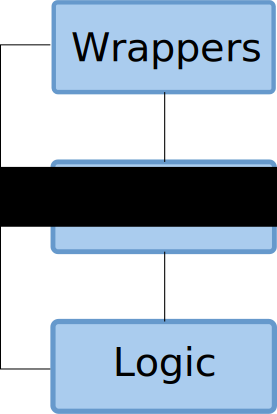
function FooPageLogic(view) {
this.init = function() {
view.addFooChangedListener(this.showOrHideFoos);
};
this.showOrHideFoos = function(e) {
if (view.getSelectedFoo() == 'the_foo_were_looking_for') {
view.showFoos();
} else {
view.hideFoos();
}
};
}
function FooPageView() {
this.addFooChangedListener = function(callback) {
browser.addChangeListener(callback);
};
this.showFoo = function() {
browser.show('#someId');
};
...
}$(document).ready(function() {
var fooPageView = new FooPageView();
var fooPageLogic = new FooPageLogic(fooPageView);
fooPageLogic.init();
});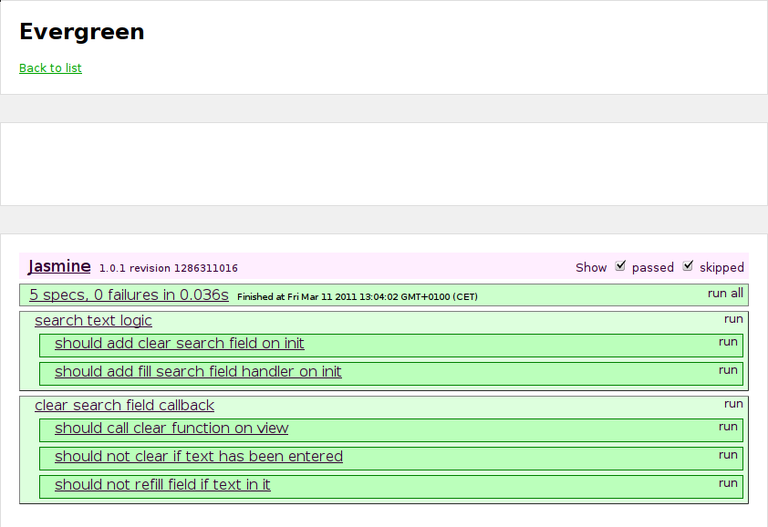
TestCase("FooLogicTest", {
testReportDatesHidden : function() {
var mockControl = new MockControl();
var fooPageViewMock =
mockControl.createDynamicMock(FooPageView);
fooPageViewMock.expects().hideReportDates();
var fooPageLogic =
new FooPageLogic(fooPageViewMock);
var result = fooPageLogic.init();
mockControl.verify();
}
});describe('foo view controller', function() {
describe('a view for an existing foo', function() {
var fooPageView;
var fooPageLogic;
beforeEach(function() {
fooPageView = new FooPageView();
fooPageLogic =
new FooPageLogic(fooPageView);
spyOn(fooPageView, 'setDatePickerFormat');
spyOn(fooPageView, 'ckEditorifyEditors');
}); describe('showing something that is not a bar', function() {
it('should not show dates', function() {
spyOn(fooPageView,
'getFooCategory').andReturn('returnValue');
spyOn(fooPageView, 'hideDates');
fooPageLogic.init();
expect(fooPageView.hideDates)
.toHaveBeenCalled();
});
});
});
});
testGetLanguageOfClosedTab: function() {
$('body').append(
'<div id="language_navigation">' +
'<ul><li>' +
'<a href="#" id="sv"/>' +
'<span id="close_sv">' +
'</li><li><a href="#" id="en"/>' +
'<span id="close_en"></li></ul></div>');
fooView = new FooPageView();
assertEquals('en',
fooView.getLanguageOfClickedTab('#close_en'));
}describe('ThingsPageView', function() {
var view;
beforeEach(function() {
view = new ThingsPageView();
}); describe('with a list of three things', function() {
beforeEach(function() {
$('#test').append(
'<select id="available_thingss" multiple="multiple">' +
'<option value="1">1</option>' +
'<option value="2">2</option>' +
'<option value="3">3</option>' +
'</select>');
}); describe('when removing a thing from available list', function() {
beforeEach(function() {
view.removeAvailableThings(1);
});
it('should not be in the list anymore', function() {
expect($('#available_thingss option:first').text()).toEqual('2');
});
});
});
});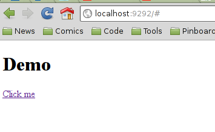
describe("Demo Page Logic", function() {
describe('someone clicks', function() {
var demoPageLogic;
var demoPageView;
beforeEach(function() {
demoPageView = new DemoPageView();
demoPageLogic = new DemoPageLogic(demoPageView);
}); it('should add text to view', function() {
spyOn(demoPageView, 'addText');
demoPageLogic.clickHandler();
expect(demoPageView.addText).toHaveBeenCalled();
});
});
});
function DemoPageLogic(demoPageView) {
}
function DemoPageView() {
}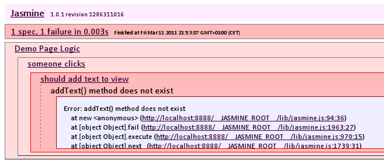
function DemoPageLogic(demoPageView) {
}
function DemoPageView() {
this.addText = function() {
};
}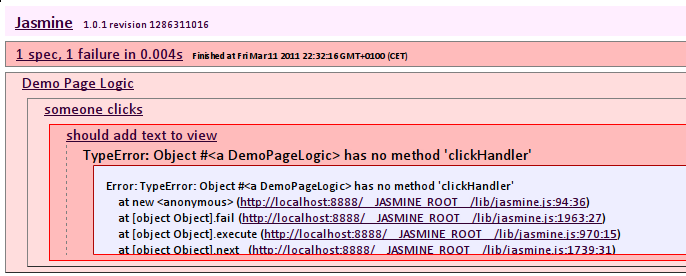
function DemoPageLogic(demoPageView) {
this.clickHandler = function() {
};
}
function DemoPageView() {
this.addText = function() {
};
}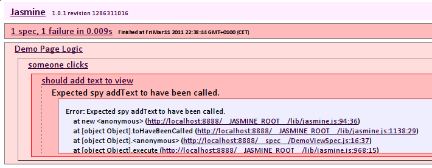
function DemoPageLogic(demoPageView) {
this.clickHandler = function() {
demoPageView.addText();
};
}
function DemoPageView() {
this.addText = function() {
};
}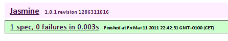
it('should add addText as callback on init', function() {
spyOn(demoPageView, 'addLinkClickedCallback');
demoPageLogic.init();
expect(demoPageView.addLinkClickedCallback)
.toHaveBeenCalledWith(demoPageLogic.clickHandler);
});
function DemoPageLogic(demoPageView) {
this.clickHandler = function() {
demoPageView.addText();
};
}
function DemoPageView() {
this.addText = function() {
};
this.addLinkClickedCallback = function(callback) {
};
}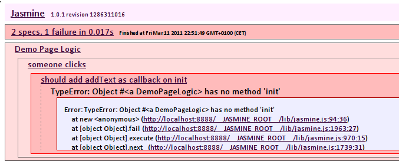
function DemoPageLogic(demoPageView) {
this.init = function() {
};
this.clickHandler = function() {
demoPageView.addText();
};
}
function DemoPageView() {
this.addText = function() {
};
this.addLinkClickedCallback = function(callback) {
};
}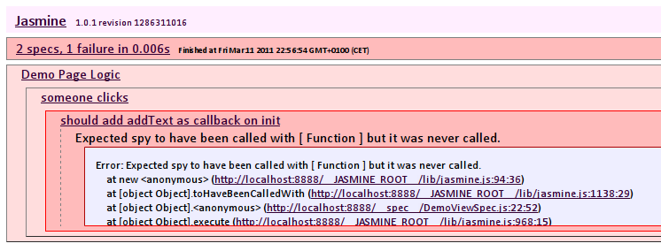
function DemoPageLogic(demoPageView) {
this.init = function() {
demoPageView.addLinkClickedCallback(this.clickHandler);
};
this.clickHandler = function() {
demoPageView.addText();
};
}
function DemoPageView() {
this.addText = function() {
};
this.addLinkClickedCallback = function(callback) {
};
}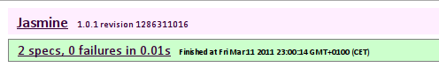
describe("Demo Page View", function() {
var view;
beforeEach(function() {
view = new DemoPageView();
});
describe('without any text', function() {
beforeEach(function() {
$('body').append('<div id="text_here"></div>');
});
describe('when adding text', function() {
beforeEach(function() {
view.addText();
});
it('should have text added', function() {
expect($('#text_here').text()).toEqual('Foo');
});
});
})
});;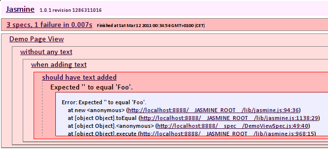
function DemoPageView() {
this.addText = function() {
$('#text_here').append('Foo');
};
this.addLinkClickedCallback = function(callback) {
$('a').click(callback);
};
}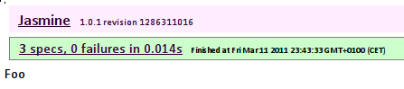
$(document).ready(function() {
var demoPageView = new DemoPageView();
var demoPageLogic = new DemoPageLogic(demoPageView);
demoPageLogic.init();
});